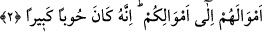

YETİM MALI YEMEMEK
2. Yetimlere mallarını verin, temizi pis olanla değişmeyin, onların mallarını kendi
mallarınıza katarak (kendi malınızmış gibi) yemeyin; çünkü bu, büyük bir
günahtır.
“Yetimlere mallarını verin.” “Yetâmâ” kelimesi, “yetîm” kelimesinin çoğuludur.
İnsanlar içinde “yetim”, ölümü sebebiyle babasız kalan çocuktur. Diğer canlılardan ise,
ölümü sebebiyle anasız kalan yavruya “yetim” denir.
Babasını kaybetme mânâsı, her ikisinde de bulunduğu için bu kelime, hem küçüğe hem
de büyüğe isim olarak kullanılmayı hak etmektedir. Fakat büyük biri, kendi işlerini
çekip çevirecek birine muhtaç olmadığı ve yetim mânâsından -ki yalnız kalmaktır-
çıktığı için, bu kelime yaygın olarak küçükler için kullanılmıştır.
“Yetimlere mallarını vermekten maksad, muhatapların yetim malına karşı sabırsızca
duydukları tamahın önüne geçmek; yetim malını kendi mallarına karıştırmak için tetikte
bekleyen ellerini bundan uzaklaştırmak ve yetim malına kötü bir maksatla yaklaşmadan,
sağ-salim kendi ellerine ulaşıncaya kadar olduğu gibi bırakmak demektir. Yoksa bilfiil
yetimlere vermek kastedilmemektedir. Çünkü bunun için yetimlerin bulûğa ermeleri ve
artık birer reşid olduklarının görülmesi şarttır. Anlatılan bu durumdan, mecâzen
“mallarını vermek” şeklinde bahsedilmesi, yetim malı ile ilgili bulunan muhataplara
düşen şeyin yetim malına sâdece göz dikmemek değil, bilakis mallarını yetimlere
ulaştırmak olduğunu bildirmek içindir. Mânâ şöyle olmaktadır: “Ey velî ve vasîler!
Yetimlerin mallarını koruyunuz, onlara göz dikmeyiniz, hak ettikleri zaman da mallarını
kendilerine tam olarak teslim ediniz.
“Temizi pis olanla değiştirmeyin.” Bir şeyi bir şeyle değiştirmek demek, kendisinin
sahip olduğu; ya da sâhip olmak üzere bulunduğu bir şey karşılığında başka bir şeyi
almak demektir. Âyetin mânâsı: “Kazandığınız helal bir malı, gasbedilmiş haram bir
malla değiştirmeyin. Yâni haram olan yetim malını helal olan kendi malınızla, size
mübah kılınan kazançlarla ve Allah’ın yeryüzüne gönderdiği rızıkla değiştirerek kendi
malınızın yerine yetim malını yemeyin.” demektir.
“Onların mallarını, kendi mallarınıza katarak yemeyin.” Burada “yemek”den
maksat, tasarrufta bulunmaktır. Çünkü yetimin malını yemek haram kılındığı gibi, bu
malı yok eden diğer tasarruflarda bulunmak da haramdır. Bunun delili, mal mefhumu
içinde yenmesi mümkün olmayan şeylerin de bulunmasıdır. “Yeme”nin zikredilmesi
malda tasarrufun genellikle “yemek” için olmasındandır. Âyetteki “ilâ”, “mea”